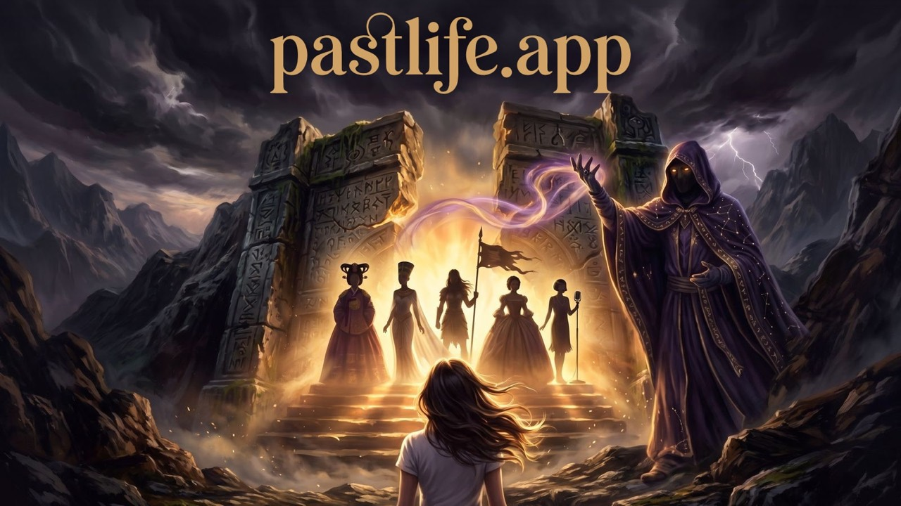

Portfolio: AI products people trust with real work
Simplify complexity.
Make AI trustworthy.
Decide by numbers.
I build products where people hand real work to AI, and I run them by the numbers. For the Abu Dhabi Government I lead the experience of Anees, which prepares and records meetings, turns them into decisions and actions, and acts only after the user approves, and of Wakeel, which reads a senior decision-maker's approvals first, in Arabic and English. At my own studio, Raymind.AI, I set the prices, the targets and the stop rules for ten products I built in code, with about 50 AI agents running the day-to-day. Earlier I set up Kakao's first European subsidiary, built the 25-person team behind Devsisters' VR business, built and led the experience team for Humain One, Saudi Arabia's national AI platform, and led Saudi Aramco's 12-person UX team.
- Now
- Abu Dhabi DGE, Product Experience Lead
(since August 2026), Founder, Raymind.AI - Before
- Humain, Devsisters, Kakao IX UK,
Saudi Aramco - Study
- MFA, Goldsmiths
BA, Central Saint Martins
Worked withNikeVolvoBarclaysVirgin AtlanticBNP ParibasSaudi AramcoKakaoDevsistersHumainAbu Dhabi DGE
What the role asks for, and where I have done it
Set direction, protect focus, and stop work when the evidence changes
Every change on my products is written down first with the metric to watch, a review date and the point at which it is switched off. On Paldo Saju, a bundle that won its A/B test was reverted when click-through halved after rollout, and a faster first screen that lost was reverted the same night. When the ads stopped paying back, they came off on 22 October and the daily loss fell by 76%.
Paldo Saju 04Run a tight product function, with decisions visible
On Wakeel each review becomes tasks, options built on the real app code, and a document per task: what users see, what to build, the data, states and exceptions, and done criteria. All nine tasks of the first review were settled and handed to development, and an update log of 253 entries records what changed and why.
Wakeel 03Set targets and stay accountable after launch
Before each test I set the primary metric and the guardrails, and I kept measuring after launch: revenue rose 87% in the second week, then I followed the slide in week three down to its biggest cause, checkout button click-through falling from 12% to 9%.
Paldo Saju 04Be in the field with users and customers
In Wakeel reviews we settle things by trying the real app screens together with the senior decision-maker who uses it. At Humain I designed the first experience of people new to AI handing real work to an agent, and at Saudi Aramco the whole digital journey for Saudi women getting their first driving licence.
Wakeel 03Drive commercial results: pricing, running costs, partnerships
I set up Kakao's first European subsidiary and kept it profitable until COVID closed it, with licensing and retail deals across the UK and France. At Devsisters I won the internal investment for a VR game and negotiated the company's first partnership with Meta. On my own products I set the prices, and prompt caching cut the cost of each LLM call by 19.5%.
TeamsQuality at pace: acceptance criteria, AI evaluation, human oversight, privacy
Done criteria for every Wakeel task, with the live app untouched and every change behind a flag. A benchmark that asks Claude,
Build an outstanding product and design team
I have led teams of 6 to 25 and built three of them from scratch: a 25-person team across product, engineering, art and marketing at Devsisters, Kakao's first European subsidiary with eight, and the six-person experience team for Humain One. At Saudi Aramco I led a 12-person UX team.
TeamsPractical AI fluency: limits, evaluation, accuracy, speed and cost
I build on the models directly: retrieval with embeddings and a concept graph, an MCP server with 29 tools, prompt rules and graded output. About 50 AI agents with set roles run my studio's products, inside daily ad and loss caps, and people decide prices, new paid channels and budget increases.
memory.wikiNice to have: coding, prototyping, data or AI systems
I build my products in code with Claude Code, from the web to iPhone and Android apps, a CLI and an MCP server. On Wakeel, 94 options were built on the real app code over three reviews.
Wakeel 03AI that people trust with real work.
Wakeel is an approval-first AI for a senior decision-maker, built with a team of agents. Paldo Saju is a product I priced, tested and ran by the numbers. memory.wiki is the AI layer I built and measured across three models. The chat products are two AI services where the conversation is the product: a character who remembers you, and a cast who listen together.

WakeelAI decisions matched to the weight of each approval
An app where AI reads a senior decision-maker's approvals at the Abu Dhabi Government first and recommends a decision. I lead its experience design: a decision flow matched to the weight of each approval and the orb that is Wakeel's face, with options built and refined within minutes on real app code by a team of AI agents.
Chat productsIsekaiPlay and Auntie Rabbit
Two AI services where almost everything happens inside the chat. I planned and designed both on my own and built them with Claude Code. On IsekaiPlay an AI character remembers the player and pays attention to them; on Auntie Rabbit a cast of characters listens to one person together, in text and in voice.
Paldo SajuA checkout flow people trust before they pay
An AI consultation where a saju master character hears your worry first, then talks it through with you. Built solo, with around 30 AI agents sharing the operations. In the first three weeks after launch, I measured every step of the funnel and fixed the checkout screen through A/B tests.

memory.wikiSwitch AI tools, keep your context
A knowledge store that gives any AI the same material with the same context. Planned and built solo, and shipped to nine surfaces: the web, Mac, iPhone and Android apps, three browser and editor extensions, a CLI and an MCP server.
Build small, judge by numbers, keep a record that compounds.
The six steps of one improvement cycle, UX principles, how I design with AI, and what I have done in organisations and teams.
ReadEverything I build and run at Raymind.AI
Beyond productivity, I believe the most important use of AI is its most basic one: conversation that hears people's worries. Paldo Saju, TarotMasters and PastLife are different ways in, each starting from a narrow topic (saju, tarot, past lives) so it can hear worries in detail and answer precisely. What people worry about most, and which answers help them open up, became data for the next step, Auntie Rabbit.
memory.wiki
Gathers your AI conversations and documents at one address and hands them to any AI as context. Web, Mac, iPhone and Android apps, browser and VS Code extensions, CLI and MCP server, built on my own.
memory.wikiAuntie RabbitNew
A late-night snack stall where a rabbit auntie and a counter of AI regulars listen to one person together, by text or voice. Auntie remembers your story, and each night becomes a diary only you can see. Live on the web in Korean, English and Japanese; the iOS and Android apps are in store review.
auntierabbit.comPaldo Saju
An AI consultation that starts from saju: master characters from Korea's eight provinces hear your worry first, then talk it through with you. Fixing the checkout by the numbers raised revenue per checkout visitor 61%.
paldosaju.com/enTarotMasters
An AI consultation that starts from tarot: you pick one of fourteen masters, each with their own voice, tell them what is on your mind and read the cards together. In six languages.
tarotmasters.app
IsekaiPlay
Ten original stories told as audio drama, web novels and character chat on one account. Finishing an episode leads into a one-to-one chat with a character who remembers it.
isekaiplay.com
PastLife
An AI consultation that starts from past lives: Mir reads your story through tarot and shows the past life it finds, with a painted portrait and a 30-second film, then talks it through with you.
pastlife.app
dopaplay
A game platform where one account carries saves, rankings and purchases across four games, on the web and on phones: 3SEC FEED, DOPA DASH, POPCHAIN and Kai's Greedy Loop. Levels are tuned by bots, then checked against real play.
dopaplay.ioScreen Styler Pro
A Mac app that unlocks your display's peak brightness, up to 1,600 nits, and lets you tune it like editing a photo, with HDR controls macOS does not offer.
screenstyler.aijolong.aiBeta
A roast training platform, Duolingo for wit. It scores any content for clichés, pretension and AI slop, and trains you to give and take sharp feedback. Built on Roast Engine.
jolong.aiThe dopaplay games are 3SEC FEED, DOPA DASH, POPCHAIN and Kai's Greedy Loop. In development: ddalggak.ai, stiqs.ai and mdcore.ai. All of them are on raymind.ai.
Work in finance, commerce, sport and entertainment

ReRun
Turned your fastest mile from your Nike Run Club history into a hyperlapse film, stitched from street photos of the route you actually ran. Launched in 16 countries. UX and UI lead.

RunTrack
A web app that makes your own music track from your run data (pace, distance, direction), the weather and the time of day. UX and UI lead.

Global Webshop
Volvo's first e-commerce pilot of its own (UK, Netherlands, Norway). Discovery, gap analysis, user journeys, wireframes and design. UX lead.

Hello Bank! Expert Review
Drew design principles from the four brand pillars of the mobile bank Hello Bank!, and used a scoring system to prioritise the journeys and tasks to improve. Four countries, several languages.

Company-wide design system
A company-wide design system and UX guidelines, applied across several business units. It also covered the digital journey for Saudi women getting their first driving licence.

Kakao Friends in Europe
Kakao's first European subsidiary. Introduced KakaoTalk and Kakao Friends to Europe, with licensing and retail partners and a Winter Wonderland pop-up.

CookieRun VR
From the proposal, team building and Meta partnership through to launch on the Meta Quest Store. A prototype in six months.
Nike Training Club, Barclays, Virgin Atlantic
Led UX for onboarding and AI recommendations in the Nike apps (NRC, NTC), the Barclays mortgage experience and the Virgin Atlantic booking experience.